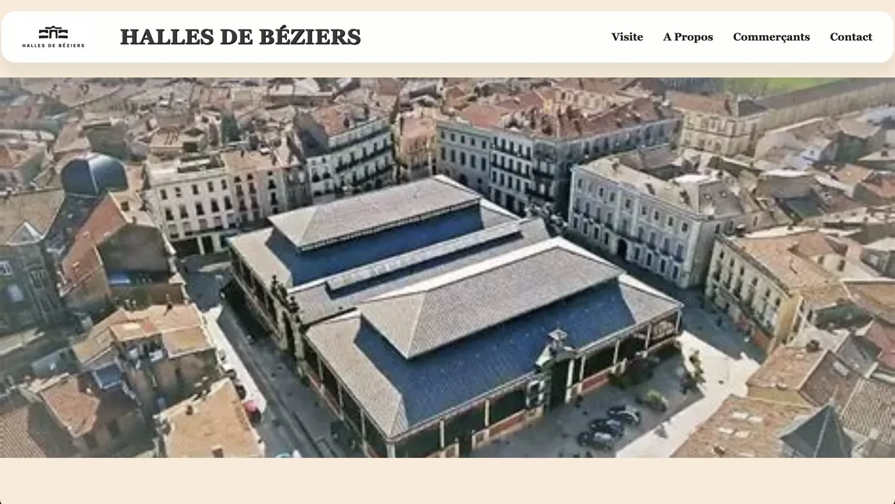
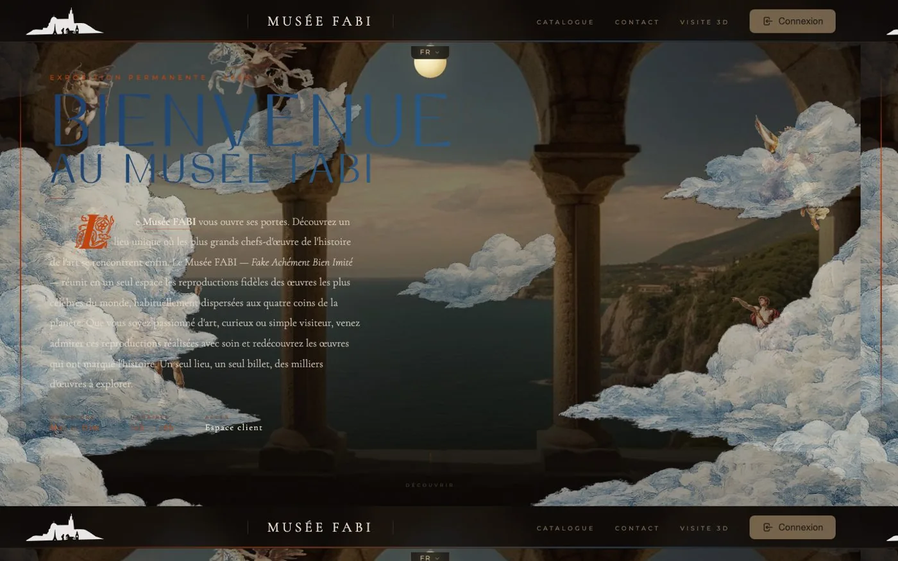
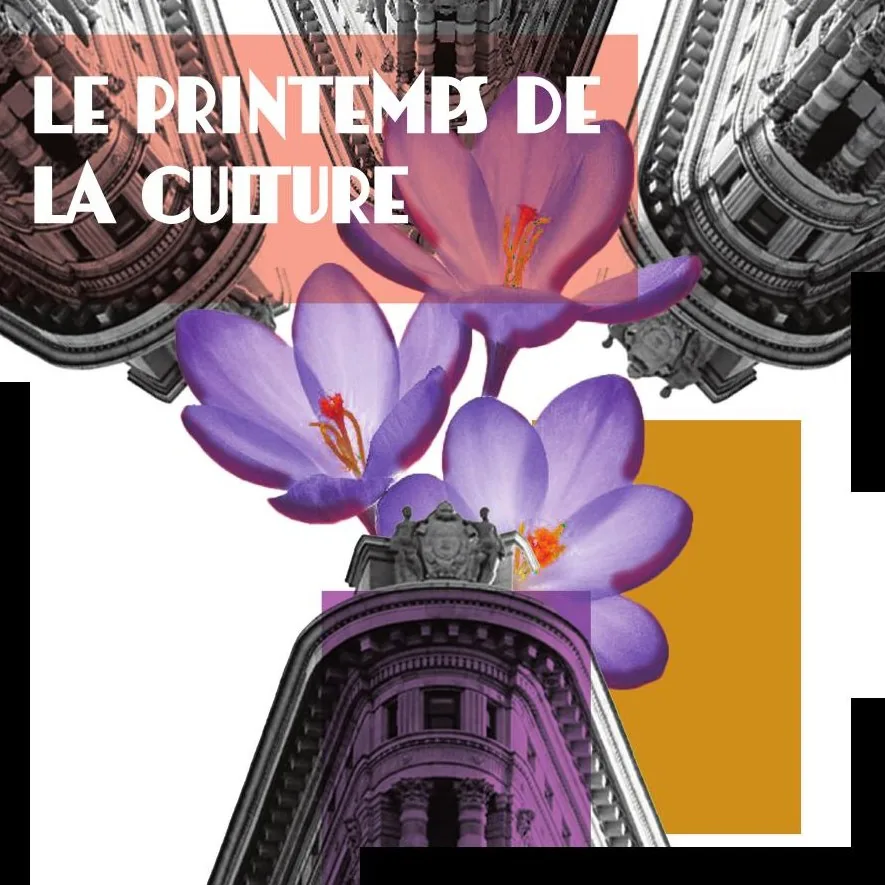
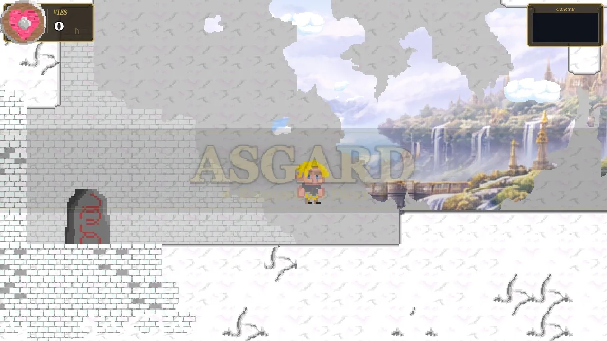
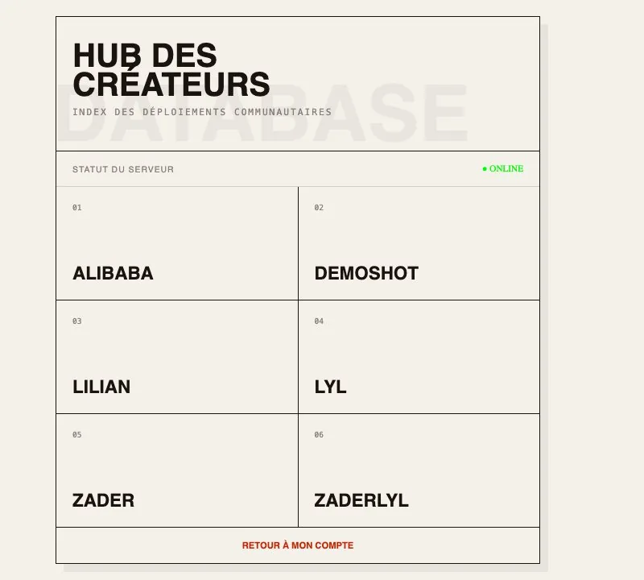
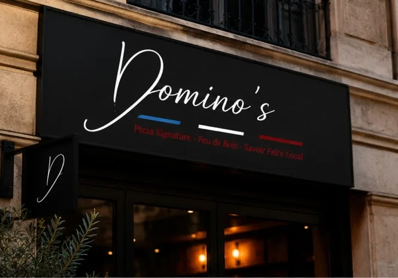

12 projets

01Halles de Béziers
Site vitrine · Visite 360°

02Musée FABI
Site dynamique · PHP · MySQL

03Printemps de la Culture
Identité · Affiche · Brochure

04GRAM
Jeu vidéo · Phaser 3

05PromoCards
Plateforme · PHP · SQLite

06Domino's
Identité · Brand book
07GitHub ↗
Spoti-Stat
Dashboard · Last.fm · Deezer
08GitHub ↗
Piscine
Plateforme d’exercices · MMI
09GitHub ↗
RepoLink
Web app · TypeScript
10GitHub ↗
Phaser UI Editor
Éditeur d’interfaces · Phaser
11GitHub ↗
Survivor
Jeu navigateur · JavaScript
12GitHub ↗
Glass Garden
Jeu d’aventure · JavaScript